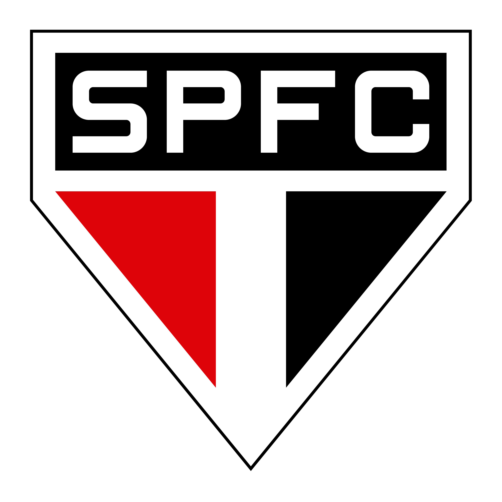
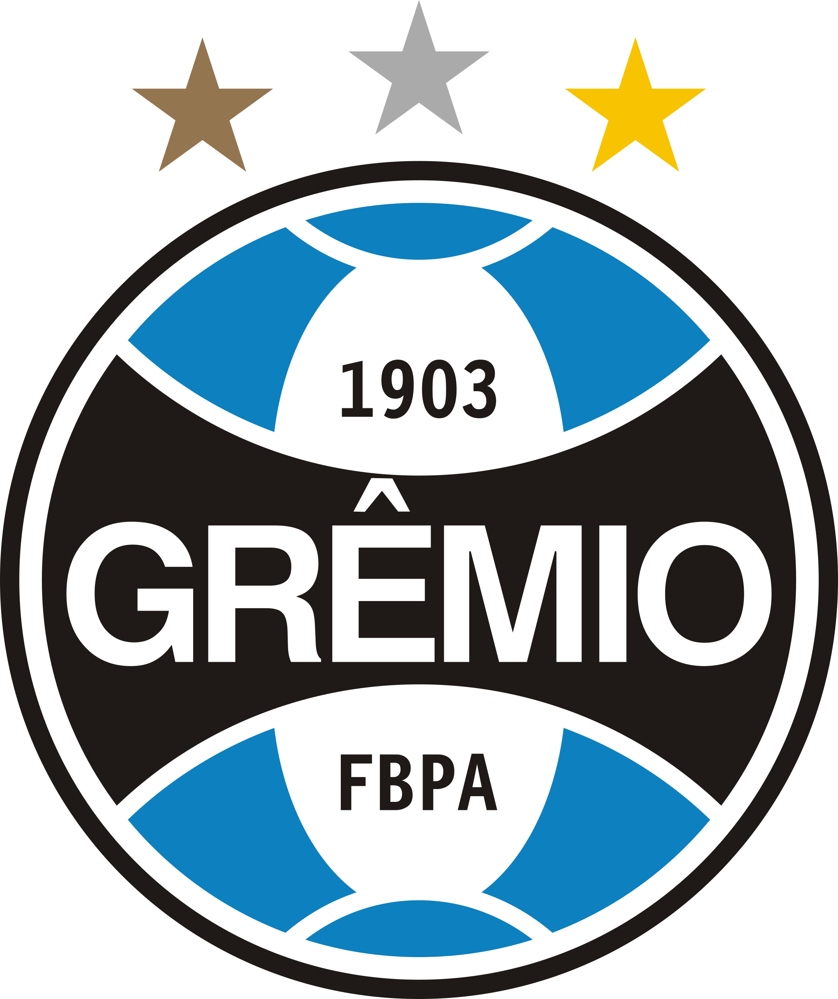
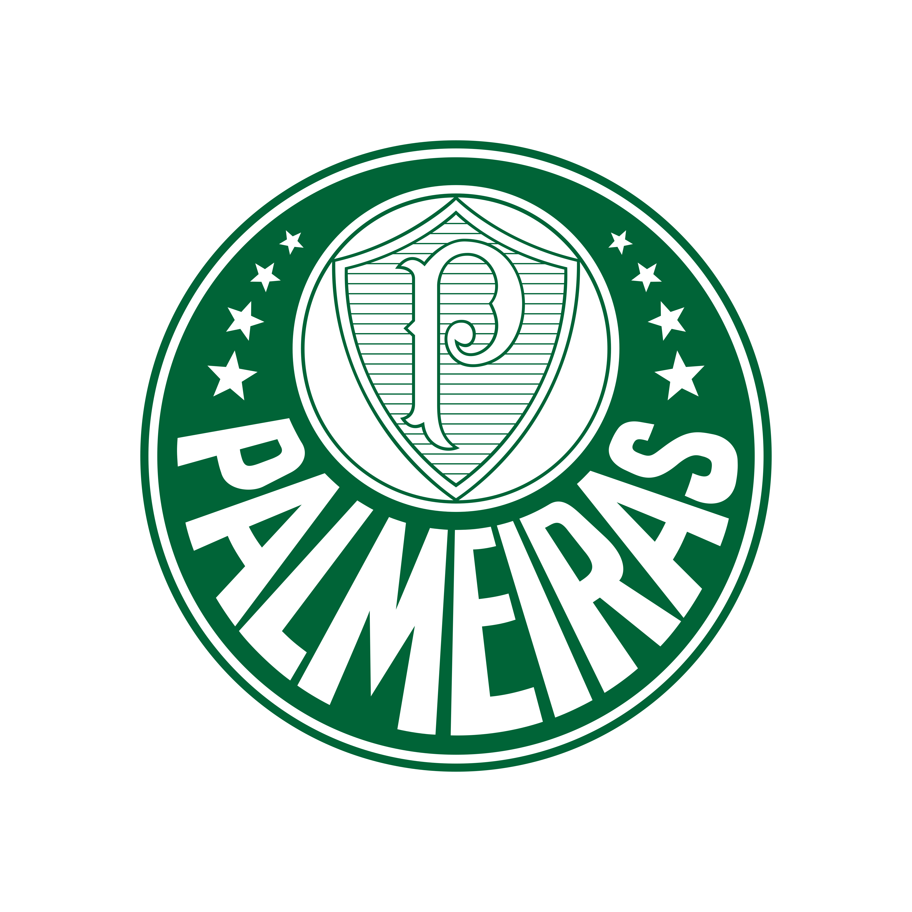
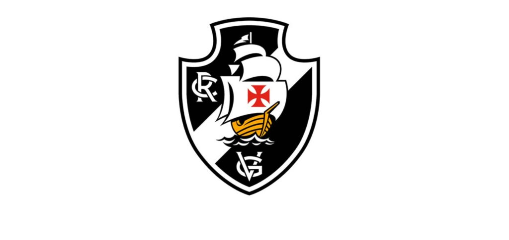

| Time | Qtd | Ano(s) | Maior time |
|---|---|---|---|
|
São Paulo
 |
3 | 1992, 1993 e 2005 | |
| Cruzeiro | 2 | 1976 e 1997 | |
|
Grêmio
 |
2 | 1983 e 1995 | |
| Santos | 2 | 1962 e 1963 | Maior time da terra |
| Inter | 1 | 2006 | |
|
Palmeiras
 |
1 | 1999 | |
|
Vasco
 |
1 | 1998 | |
| Flamengo | 1 | 1981 |